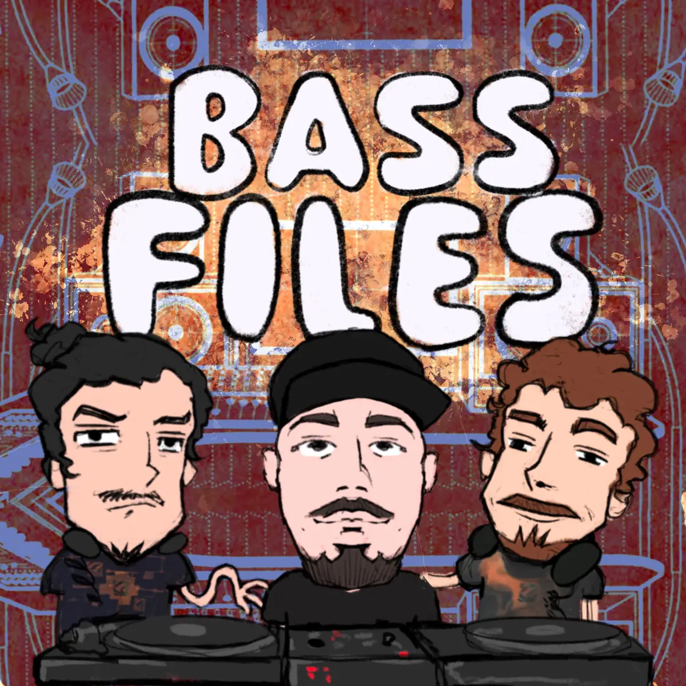

New Waves — Bass Files
Bass Files.
01 — Il format
Interviste e dj set sulla scena.
In collaborazione con Drum And Bass Italia
Bass Files è il format di interviste e dj set dedicato alla scena drum & bass e jungle italiana, ideato da Djambe e Dema in collaborazione con Niko di Drum And Bass Italia.
Ogni puntata è un'intervista approfondita ad un artista, seguita dal suo dj set: i producer suonano esclusivamente le proprie tracce, chi è un punto di riferimento della scena come selector porta la sua selezione.
Dai veterani che hanno costruito la scena alle nuove generazioni, Bass Files dà spazio a chi ha un percorso da raccontare, senza hype né promozione.
Le puntate sono disponibili sul canale YouTube di Drum And Bass Italia e sul canale SoundCloud di New Waves.

02 — Episodi
Guarda e ascolta.
03 — Altri progetti
Altri progetti.
Residenza artistica
Radio Ombra
Radio indipendente con base al Chet, locale storico di Venezia.
Festival — in arrivo
Mountain Waves
Il festival organizzato dal collettivo.
04 — Contatti
Contattaci.
Hai una proposta, un'idea per un ospite o vuoi collaborare a Bass Files? Scrivici.